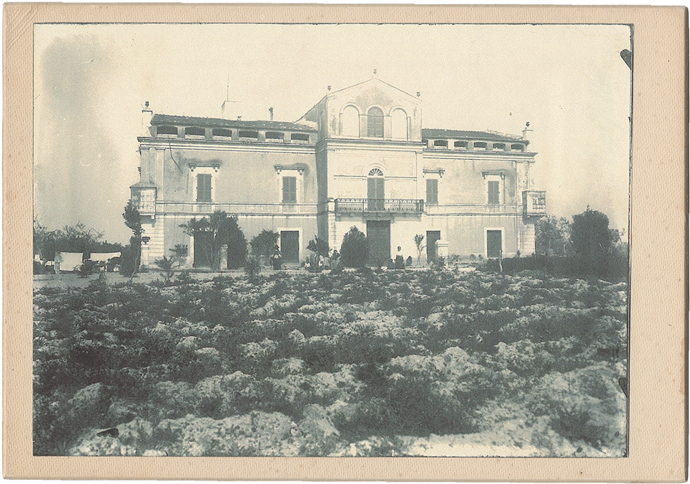
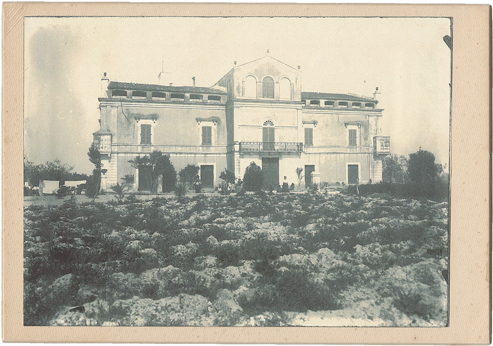

(2) Villa Fenicia nell'800.

Storia
La storia di Villa Fenicia è da sempre intrecciata a quella della famiglia da cui prende il nome.
I primi insediamenti della zona sono di epoca romana, ma nel 1600 viene costruita la masseria fortificata la cui struttura è ancora oggi il cuore della Villa: con la sua produzione agricola, era un’importante area rurale, assegnata all’architetto Giulio Cesare Fenicia, nobile di Ravello per il governo di Ruvo di Puglia.
È nel 1870 che la masseria viene trasformata dall’architetto De Judicibus, incaricato da Michele Fenicia, nell’elegante struttura odierna, caratterizzata in modo unico dai colori della costiera amalfitana - come le tinte gialle e il rosso pompeiano della facciata – uniti al vivo della chianca di Trani. Oggi, grazie all’importante opera di restauro di Antonio Fenicia, rappresenta uno delle più suggestive architetture della zona.
I primi insediamenti della zona sono di epoca romana, ma nel 1600 viene costruita la masseria fortificata la cui struttura è ancora oggi il cuore della Villa: con la sua produzione agricola, era un’importante area rurale, assegnata all’architetto Giulio Cesare Fenicia, nobile di Ravello per il governo di Ruvo di Puglia.
È nel 1870 che la masseria viene trasformata dall’architetto De Judicibus, incaricato da Michele Fenicia, nell’elegante struttura odierna, caratterizzata in modo unico dai colori della costiera amalfitana - come le tinte gialle e il rosso pompeiano della facciata – uniti al vivo della chianca di Trani. Oggi, grazie all’importante opera di restauro di Antonio Fenicia, rappresenta uno delle più suggestive architetture della zona.
(2) Phasellus ultrices quis enim sit amet imperdiet.
Iniziato nel 1970 e durato per oltre vent’anni sotto l’appassionata guida di Antonio Fenicia, il restauro ha ridato alla Villa tutta la sua vitalità. I mobili originali sono stati recuperati insieme ai decori, mantenendo intatti i tanti affreschi delle sale. Per renderla un luogo accogliente sono stati aggiunti tutti i comfort necessari, fra cui il Giardino d’Inverno e la moderna cucina che oggi accoglie i cuochi Francesco e Vincenzo Montaruli. L’opera di restauro ha preservato i beni più antichi, rendendola una vera e propria casa, “luogo del ritorno” per i tanti affezionati ospiti.
(2) Phasellus ultrices quis enim sit amet imperdiet.